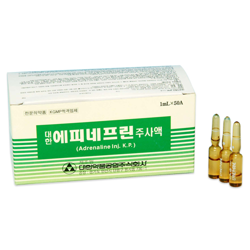

에피네프린
출처 : 약학정보원
효능 : 1. 혈관 수축 2. 기관지 확장 3. 아나필락시스쇼크, 혈압 하락, 기관지천식(호흡곤란)등에 사용
용법/용량 : 1. 피하 및 근주 : 에피네프린으로서 1회 0.2-1.0mL 투여한다. 2. 정맥주사 : 심정지 등 긴급시에는 이 약 0.25mL를 넘지 않는 범위 내에서 생리 식염 주사액 등에 희석하여 천천히 주사한다.
부작용/주의사항 : 만성 코카인 중독 환자(코카인은 교감신경 효능약 말단에 카테콜아민의 재흡수를 방해하여 이 약의 작용을 증강시킬 수 있다)